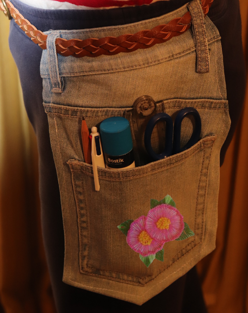
This is
Belockets
Made by Farwa, Zohra, Kate and Shania
Sustainability
The Belocket is a sustainable product that helps in everyday life. Did you know that 1.2 billion tonnes of greenhouse gases are emitted into the atmosphere every year in Australia from the production of textile clothing. The manufacture of textiles also results in 20% of global waste water.
Then after this clothing is made, approximately 56 million tonnes is brought globally each year. This number is expected to rise to 93 million tonnes by 2030 and 160 million tonnes by 2050! In Australia the average person consumes an average of 27 kilograms of new clothing per year! Then an average of 23 kilograms of that 27, goes to landfill each year! And can take 2-10 years to decompose.
This is because textile clothing is hard to recycle as they are made of many different materials. For example, an average pair of jeans are made from cotton yarn which is usually blended with elastane, and other components such as: zips, buttons, polyester sewing thread and dyes. As a result, they have to be hand sorted and pulled apart into the separate groups to be recycled properly. This is a long process and therefore just 12% of the material used for clothing ends up being recycled.
All of these textiles ending in landfill is unsustainable. This is why we created the Belocket. The Belocket saves some of this clothing as they are made from donated old clothing that could never be worn again and would otherwise end in landfill.
Uses
Have you ever experienced having no pockets in your pants? Where will you put your phone? Belongings? Fret not, Belockets is your way-to-go product of choice. These portable belt pockets are used so that you can carry your belongings around if you ever forget to wear pants or other clothing with pockets attached. The pocket is 15cm in depth and 13.3cm in length. The pocket size is suitable for fitting phones, wallets, keys, small toys, collectables and even that random $20 note you found outside.
Not only as its function is to carry small items around, but it is also aesthetically fashionable.
Discription
Have you ever experienced having no pockets in your pants? Where will you put your phone? Belongings? Fret not, Belockets is your way-to-go product of choice. These portable belt pockets are used so that you can carry your belongings around if you ever forget to wear pants or other clothing with pockets attached. The pocket is 15cm in depth and 13.3cm in length. The pocket size is suitable for fitting phones, wallets, keys, small toys, collectables and even that random $20 note you found outside.
Not only as its function is to carry small items around, but it is also aesthetically fashionable.
Manufaturing Process
In the first step, we got an old pair of jeans and we cutted it for the front and back to be seperate. After that, we cutted those pants vertically fron right under the back pocket.
The secound step is when we cutted the extra fabric out to make it right on the outlines on the pocket leaving just 1 or 2 fingers.
In step three, we pinned the corners of the pocket for sewing
The step four is where we removed one of the belt loop from the jeans and sew it to our pocket
Step five is when you start sewing the corners of the pocket taking the pins of as you go.
Step six was the fun part. In this step, we started designing our pockets with flowers and leaves. This was the last step and after this we were done with your pocket
 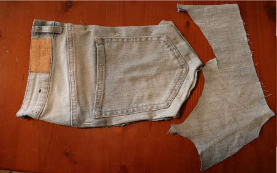
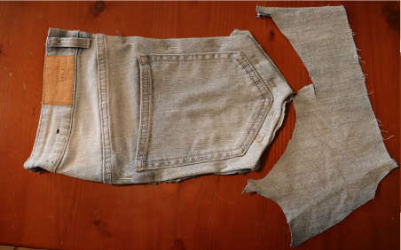
 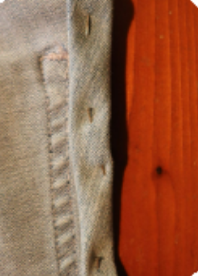
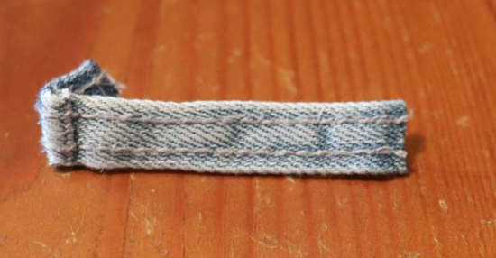
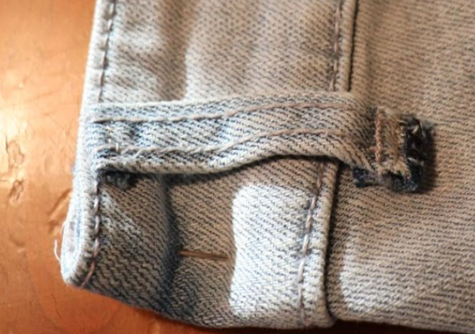
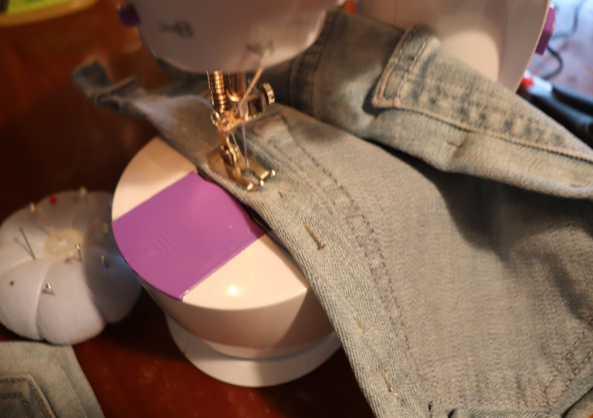
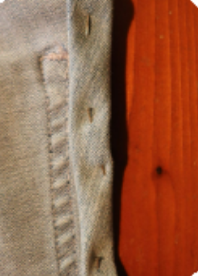
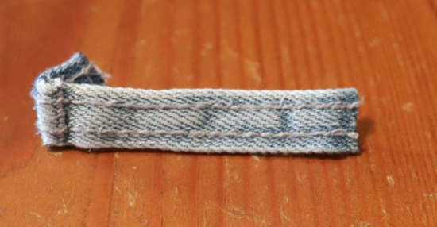
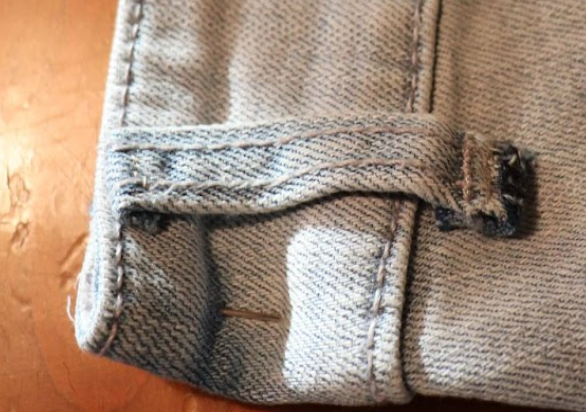
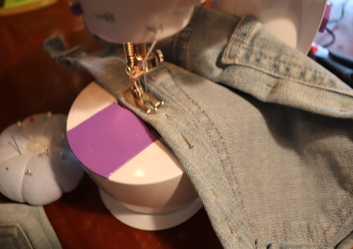